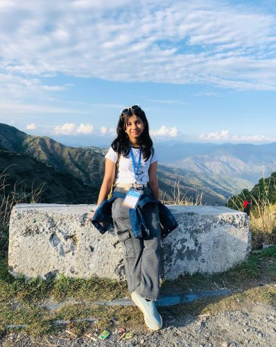

Urvi's Personal Site
Welcome! I’m Urvi Garg.
I’m a 14-year-old curious and introspective student passionate about exploring the world, experiencing new things, and learning more about myself. As an INFJ and an introvert, I often find joy in the quieter, deeper sides of life—and I have a knack for things that might be considered unusual by many in my generation. I’m seeking ways to express myself and grow.
This site is a small window into who I am and what I love. Please use the links below to explore the pages in this site.